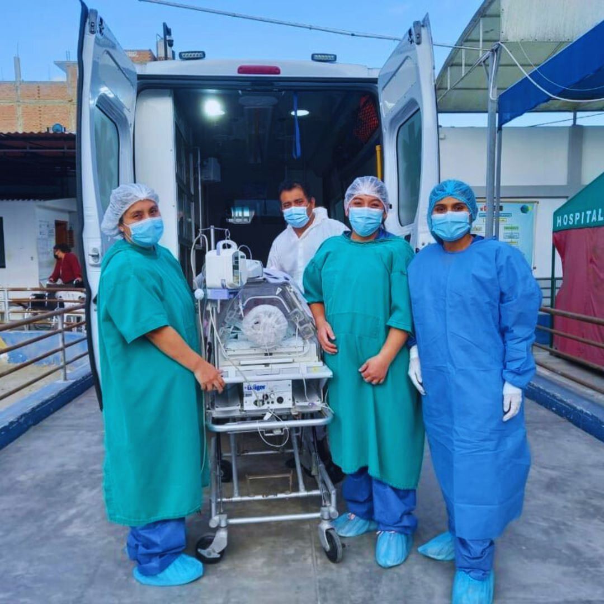

¿Quiénes Somos?
Visión
Ser un hospital líder a nivel regional en la prestación de servicios de salud integrales, con altos estándares de calidad, tecnología moderna y un enfoque humanizado para toda la población de Chimbote y Áncash.
Misión
Brindar atención médica especializada y preventiva de salud con equidad, eficiencia y calidez, garantizando el bienestar de nuestros pacientes y promoviendo estilos de vida saludables en la comunidad.
Valores
• Vocación de Servicio
• Compromiso Social
• Ética y Transparencia
• Solidaridad y Respeto
Reseña Histórica
HOSPITAL LA CALETA 1945 - 2026
Breve reseña histórica de Nuestra Institucion, que hoy cumple 81 años de su creación.

El 15 de mayo de 1995, el hospital La Caleta de Chimbote cumplió medio siglo de fundado. Fui testigo de excepción desde los inicios de su construcción y, luego, por haberlo puesto en funcionamiento, ya que he sido su primer Director. Escribo estas líneas evocativas no sólo porque marcaron un hito en mi vida profesional y familiar; sino, sobre todo, porque es un hospital con historia, aún insuficientemente conocida.
A partir de la década del 40, el gobierno decidió desarrollar la cuenca del río Santa, mediante la constitución de la Corporación Peruana del Santa, a semejanza de la Tennessee Valley Authorization de los Estados Unidos de América. La idea original consistió en el desarrollo de la industria siderúrgica con la construcción de la Central Hidroeléctrica del Cañón del Pato y la utilización de las minas de carbón de La Galgada. Para concretar dicha idea se iniciaron las obras de construcción del muelle carbonero, de La Caleta, los Altos Hornos y demás instalaciones. (En esa época se ignoraba la utilización industrial de la anchoveta que convirtió a Chimbote en el primer puerto pesquero del mundo).
A esas medidas internas se sumó un acontecimiento externo: el ataque japonés a la flota americana en Pearl Harbor, en diciembre de 1941, y el bloqueo al acceso a las fuentes de materias primas de interés bélico como la quina, el caucho, etc. De esta manera, el teatro de operaciones de la Segunda Guerra Mundial se extendió de Europa al Pacífico, América Latina y, en particular, la costa del Pacífico donde está situado el Perú, se convirtió en una zona de importancia estratégica para los Aliados.
Actualmente el Hospital la Caleta es un centro hospitalario público de Segundo Nivel II-2 que ofrece servicios especializados en salud, administrado por el Gobierno Regional ubicado en el centro poblado ancashino de La Caleta, distrito de Chimbote, provincia del Santa. Leer más
Organigrama Institucional
Estructura jerárquica y operativa oficial de nuestra institución de salud.